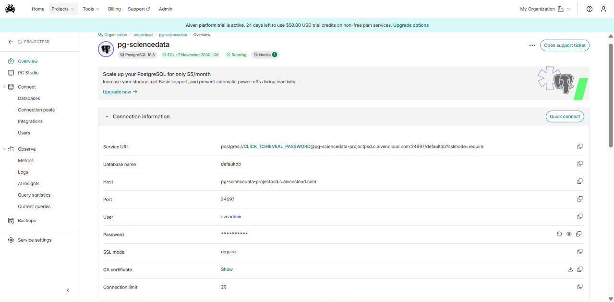

Implementasi Integrasi Aiven PostgreSQL, DBeaver, dan KNIME Analytics Platform#
Langkah 1: Pengambilan Kredensial Database dari Aiven#
Masuk ke dalam platform konsol Aiven menggunakan akun aktif atau daftar jika belum memiliki akun.
Klik tombol Create service, pilih layanan basis data PostgreSQL, tentukan penyedia cloud beserta wilayah server terdekat, lalu pilih paket layanan (Free Tier atau Startup).
Berikan nama unik pada layanan tersebut, klik Create service, dan tunggu hingga status peladen berubah menjadi aktif (Running).
Buka menu Overview pada layanan PostgreSQL yang baru saja dibuat di dasbor Aiven, salin informasi koneksi penting
Database name :
defaultdbHost :
pg-sciencedata-projectpsd.c.aivencloud.comPort :
24697User :
avnadminPassword : gunakan password yang ditampilkan melalui ikon mata atau tombol salin pada dashboard Aiven
SSL mode :
require
Unduh berkas sertifikat keamanan dengan mengeklik tombol Show pada bagian CA certificate, karena komunikasi dengan peladen Aiven mewajibkan enkripsi SSL aktif

Langkah 2: Konfigurasi Koneksi Aiven PostgreSQL ke DBeaver#
Buka aplikasi DBeaver, buat koneksi baru (New Database Connection), dan pilih jenis basis data PostgreSQL.
Masukkan parameter host, port, nama basis data, serta kredensial pengguna (avnadmin dan password Aiven) pada tab pengaturan utama.
Masuk ke pengaturan SSL di DBeaver, aktifkan opsi enkripsi SSL (require), dan unggah berkas sertifikat CA yang telah diunduh dari Aiven.
Klik Test Connection untuk memastikan koneksi berhasil terhubung, lalu telusuri struktur tabel melalui panel Database Navigator (Schemas > public > Tables) guna memastikan tabel polutan dan kolom data deret waktu (time-series) sudah tersedia.
Langkah 3: Import File CSV Kualitas Udara Ke PostgreSQL#
Buka DBeaver yang sudah terhubung ke peladen basis data Aiven Anda.
Di panel sebelah kiri (Database Navigator), kembangkan folder koneksi Anda, lalu navigasikan ke Databases > defaultdb > Schemas > public.
Klik kanan pada folder Tables, kemudian pilih opsi Import Data… dari menu konteks yang muncul.
Pada jendela Wizard penataan transfer, pilih format CSV sebagai sumber data, lalu lanjutkan dengan menekan tombol Next >.
Klik tombol Add file untuk mencari dan memilih berkas CSV kualitas udara yang tersimpan di komputer lokal Anda.
Periksa konfigurasi pemetaan kolom (Mapping) dan format data (Data format), pastikan opsi baris pertama sebagai tajuk kolom (Header line) sudah aktif.
Langkah 4: Membangun Workflow Analitik di KNIME Analytics Platform#
Buka aplikasi KNIME Analytics Platform dan buat sebuah workflow baru.
Cari dan seret (drag-and-drop) empat node utama dari Node Repository ke lembar kerja
PostgreSQL Connector (untuk menghubungkan KNIME ke server Aiven).
DB Table Selector (untuk memilih skema public dan tabel data polutan).
DB Reader (untuk menarik data tabel dari basis data ke dalam memori KNIME).
Statistics (untuk menghitung seluruh metrik statistik deskriptif secara otomatis).
Hubungkan port antar-node secara berurutan sesuai alur di atas.
Klik kanan pada node DB Reader dan pilih Execute hingga indikator berubah menjadi hijau

Langkah 5: Membaca dan Menganalisis Hasil Statistika Deskriptif#
Setelah data berhasil ditarik dari cloud database Aiven dan diproses melalui alur kerja KNIME, tahapan terakhir adalah mengeksekusi perhitungan analitik untuk membaca karakteristik sebaran data polutan.
Klik kanan pada node Statistics di lembar kerja KNIME, lalu pilih opsi Execute.
Setelah lampu indikator node berubah menjadi hijau (menandakan proses komputasi sukses), klik kanan kembali pada node tersebut dan pilih menu Statistics View (atau ikon kaca pembesar).
Jendela visualisasi tabel statistik akan terbuka, menyajikan ringkasan parameter analitik komprehensif untuk setiap parameter polutan (CO, NO2, dan SO2) seperti yang terlihat pada gambar di atas:

Rincian Pembacaan Parameter Statistik
Min, Max, & Mean: Digunakan untuk mengidentifikasi batas bawah, batas atas, serta nilai rata-rata konsentrasi tiap polutan. Sebagai contoh, parameter CO memiliki nilai rata-rata (mean) sebesar 0.0287 dengan rentang nilai dari minimum 0.0205 hingga maksimum 0.0436.
Std. Dev. & Variance: Mengukur tingkat fluktuasi dan penyebaran data harian di sekitar nilai rata-ratanya. Nilai deviasi standar yang kecil mengindikasikan bahwa konsentrasi gas polutan tersebut cenderung stabil sepanjang periode pengamatan.
Skewness & Kurtosis: Menyajikan ukuran bentuk distribusi data. Nilai skewness positif (seperti 2.3519 pada NO2) menunjukkan bahwa kurva distribusi data mencuat ke kanan (right-skewed), sementara nilai kurtosis mengevaluasi tingkat keruncingan puncak serta keberadaan nilai ekstrem (outlier).
No. Missings: Menampilkan jumlah baris data yang kosong atau bernilai NULL akibat kegagalan rekam sensor pada rentang waktu tertentu. Berdasarkan hasil tabel, tercatat sebanyak 87 data kosong pada kolom CO, 74 pada kolom NO2, dan 44 pada kolom SO2.
Histogram: Visualisasi grafik batang (binned quantitative data) yang memperlihatkan pola frekuensi sebaran nilai untuk masing-masing parameter polutan udara.
Penjelasan, Rumus, dan Contoh Perhitungan dari Seluruh Fitur pada Nodes Statistik#
Node Statistics di KNIME Analytics Platform secara otomatis memproses seluruh kolom numerik untuk menghasilkan ringkasan parameter deskriptif.


Penjabaran Rumus dan Contoh Perhitungan Manual#
Berikut adalah rincian rumus matematis statistika deskriptif beserta simulasi perhitungannya yang disesuaikan dengan standar buku ajar Data Mining dan hasil output KNIME:
1. Mean (Rata-rata Aritmatika)#
Penjelasan: Nilai pusat dari keseluruhan data valid yang diperoleh dengan menjumlahkan seluruh observasi lalu dibagi jumlah data valid (\(n\)).
Rumus: $\(\bar{x} = \frac{1}{n} \sum_{i=1}^{n} x_i\)$
Contoh Perhitungan: $\(\bar{x} = \frac{8.015}{279} \approx 0.0287 \rightarrow \text{dibulatkan menjadi } 0.029\)$
2. Standard Deviation (Standar Deviasi) & Variance (Varians)#
Penjelasan: Standar deviasi mengukur seberapa jauh sebaran data menyimpang dari nilai rata-ratanya, sedangkan varians adalah kuadrat dari standar deviasi (\(s^2\)).
Rumus Sampel: $\(s = \sqrt{\frac{\sum_{i=1}^{n} (x_i - \bar{x})^2}{n - 1}}, \quad s^2 = \frac{\sum_{i=1}^{n} (x_i - \bar{x})^2}{n - 1}\)$
Contoh Perhitungan:
Diketahui jumlah kuadrat deviasi \(\sum (x_i - \bar{x})^2 = 0.002379\), maka: $\(s = \sqrt{\frac{0.002379}{279 - 1}} = \sqrt{0.00000856} \approx 0.00292 \rightarrow \mathbf{0.003}\)$
Varians (\(s^2\)) = \((0.00292)^2 = 0.0000085 \rightarrow \mathbf{0}\) di KNIME.
3. Skewness (Kemiringan Distribusi)#
Penjelasan: Mengukur tingkat asimetri kurva distribusi data terhadap nilai rata-ratanya. Nilai \(> 0\) menunjukkan distribusi condong ke kanan (right-skewed).
Rumus (Fisher-Pearson): $\(\text{Skewness} = \frac{n}{(n-1)(n-2)} \sum_{i=1}^{n} \left(\frac{x_i - \bar{x}}{s}\right)^3\)$
Simulasi Perhitungan:
Faktor Pengali (\(A\)) = \(\frac{279}{(278)(277)} \approx 0.00362\)
Akumulasi Momen Ketiga (\(B\)) = \(\sum \left(\frac{x_i - \bar{x}}{s}\right)^3 \approx 213.81\)
Skewness = \(0.00362 \times 213.81 =\) 0.774
4. Kurtosis (Excess Kurtosis)#
Penjelasan: Mengukur tingkat keruncingan puncak distribusi dan probabilitas kemunculan nilai ekstrem (outlier).
Rumus: $\(\text{Kurtosis} = \left[ \frac{n(n+1)}{(n-1)(n-2)(n-3)} \sum_{i=1}^{n} \left(\frac{x_i - \bar{x}}{s}\right)^4 \right] - \frac{3(n-1)^2}{(n-2)(n-3)}\)$
Hasil Perhitungan: Dengan memasukkan seluruh elemen data valid ke dalam rumus momen keempat, diperoleh nilai Excess Kurtosis sebesar 2.257.
5. Overall Sum#
Penjelasan: Akumulasi penjumlahan total dari seluruh nilai observasi valid.
Rumus: $\(\text{Overall Sum} = \sum_{i=1}^{n} x_i = \bar{x} \times n = 0.0287 \times 279 \approx \mathbf{8.015}\)$
6. Metrik Kualitas Data (No. Missings, NaNs, \(\pm\infty\))#
No. Missings: Jumlah baris kosong atau
NULL(misal: 87 baris kosong pada kolom CO).No. NaNs: Jumlah entri komputasi yang tidak terdefinisi (\(0/0\)), bernilai
0.No. \(+\infty\) / \(-\infty\): Jumlah nilai tak terhingga positif atau negatif akibat limpahan kapasitas angka, bernilai
0.